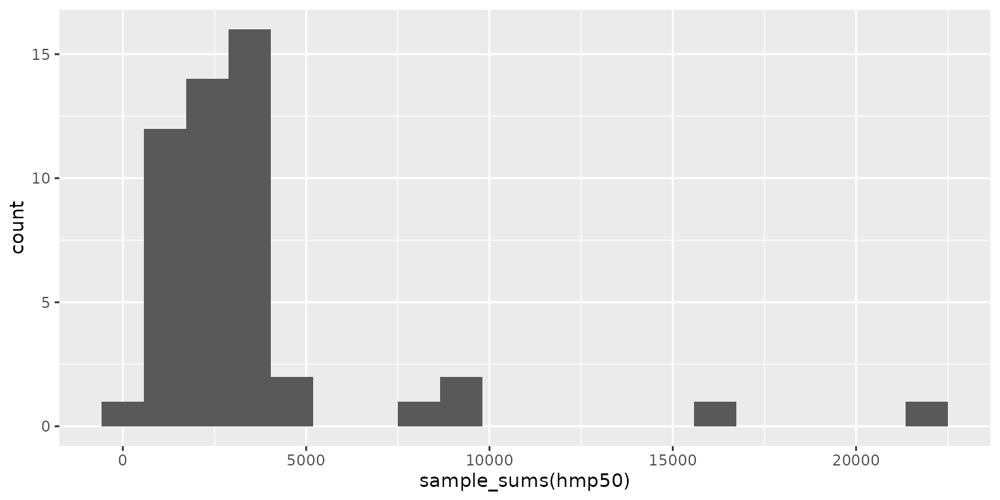

Summarize the taxa observations in each sample.
Usage
sample_sums(biom, rank = -1, sort = NULL, unc = "singly")
sample_apply(biom, FUN, rank = -1, sort = NULL, unc = "singly", ...)Arguments
- biom
An rbiom object, such as from
as_rbiom(). Any value accepted byas_rbiom()can also be given here.- rank
What rank(s) of taxa to display. E.g.
"Phylum","Genus",".otu", etc. An integer vector can also be given, where1is the highest rank,2is the second highest,-1is the lowest rank,-2is the second lowest, and0is the OTU "rank". Runbiom$ranksto see all options for a given rbiom object. Default:-1.- sort
Sort the result. Options:
NULL- don't sort;"asc"- in ascending order (smallest to largest);"desc"- in descending order (largest to smallest). Ignored when the result is not a simple numeric vector. Default:NULL- unc
How to handle unclassified, uncultured, and similarly ambiguous taxa names. Options are:
"singly"-Replaces them with the OTU name.
"grouped"-Replaces them with a higher rank's name.
"drop"-Excludes them from the result.
"asis"-To not check/modify any taxa names.
Abbreviations are allowed. Default:
"singly"- FUN
The function to apply to each column of
taxa_matrix().- ...
Optional arguments to
FUN.
Value
For sample_sums, A named numeric vector of the number of
observations in each sample. For sample_apply, a named vector or
list with the results of FUN. The names are the taxa IDs.
See also
Other samples:
pull.rbiom()
Other rarefaction:
rare_corrplot(),
rare_multiplot(),
rare_stacked(),
rarefy(),
rarefy_cols()
Other taxa_abundance:
taxa_boxplot(),
taxa_clusters(),
taxa_corrplot(),
taxa_heatmap(),
taxa_stacked(),
taxa_stats(),
taxa_sums(),
taxa_table()
Examples
library(rbiom)
library(ggplot2)
sample_sums(hmp50, sort = 'asc') %>% head()
#> HMP36 HMP24 HMP03 HMP02 HMP42 HMP17
#> 182 1183 1353 1371 1489 1579
# Unique OTUs and "cultured" classes per sample
nnz <- function (x) sum(x > 0) # number of non-zeroes
sample_apply(hmp50, nnz, 'otu') %>% head()
#> HMP01 HMP02 HMP03 HMP04 HMP05 HMP06
#> 49 75 75 83 67 105
sample_apply(hmp50, nnz, 'class', unc = 'drop') %>% head()
#> HMP01 HMP02 HMP03 HMP04 HMP05 HMP06
#> 10 13 12 13 12 15
# Number of reads in each sample's most abundant family
sample_apply(hmp50, base::max, 'f', sort = 'desc') %>% head()
#> HMP44 HMP25 HMP11 HMP21 HMP34 HMP46
#> 16220 9581 6308 5786 4645 4050
ggplot() + geom_histogram(aes(x=sample_sums(hmp50)), bins = 20)
